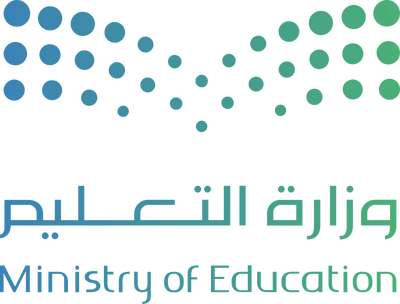

📷 اسمحي للمتصفح باستخدام الكاميرا لترَي النواة في فصلك!
تفعيل الكاميرا

الواقع المعزز ١ ⚛ داخل النواة
العلوم • ثالث متوسط • المعلمة: فاطمه الزربان • مجمع جو التعليمي
⌂
＋
－
⟳
🔄
📸
بروتون +
نيوترون
إلكترون −
⚛
رحلة إلى داخل النواة
وجّهي الكاميرا إلى مكتبك أو سبّورة الفصل…
اسحبي بإصبعك للتدوير، وقرّبي بإصبعين للتكبير 🤏
ابدئي الرحلة ▶